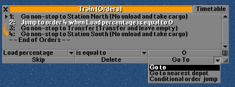
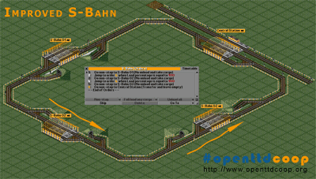

Complex Orders and Improved S-Bahn Concept
Another great and useful feature which one or two didn’t recognize yet are Conditional Order Jumps. They are not available in OpenTTD 0.6.3 but if you are playing with recent nightly builds you should definitely use their advantages. As the name says you can use these special entries in the list to jump to a certain order.
Lets get an overview about the usage first and therefor we start with the types of conditions.

Condition Types
- Load percentage > Integer
- Reliability > Integer
- Maximum Speed > Integer
- Vehicle age (years) > Integer
- Requires service > Boolean
- Always
Integers can have the following options: equal (=), not equal (!=), less than (<), less or equal to (<=), more than (>), more or equal to (>=).
Boolean: is true, is false
Hint: Always means always jumping.
Usage
Instead of Go To click the drop down button and choose Conditional Order Jump. Now you have to choose the order you want to jump to. Inserting an Order Jump into the list is as easy as inserting a regular order. Just click the order before which you want to insert the new one and it’ll happen. After inserting the order choose the type of condition and adjust it to your needs until it fits.
Complex System
The Improved S-Bahn Concept
This is a heavy one. We always had the problem with S-Bahn loops and bad ratings at station too close to the transfer drop because the trains were fully loaded. In ancient times they even stopped at these stations and and fully unloaded and reloaded. This is a waste of time and causes bad ratings at stations and many waiting passengers which were not transfered to the Central Stations. Here comes my idea into play. Every S-Bahn stations has its own by-pass and after every Go To Next S-Bahn Station a Conditional Order Jump proves whether it makes sense to enter the next S-Bahn Station (i.e. not fully loaded) or directly go to the Central Station.

Basic example of the Improved S-Bahn Concept

Speed Switchers
Tonight we talked about how sweet it would be to have switchers sorting trains by speed to ease up the handling of trains with different speeds in the same network. One possible solution could be the usage of Conditional Order Jumps. It would be possible to add orders according to the max speed of a train and e.g. jump to a certain waypoint for a track with common speeds. I am not sure how and if it works but it could make some things easier for us.
Last But not Least… a video
Categories: Community News, OpenTTD, ProZone, Tutorial, Video
Rob October 21, 2008 01:09
That’s a good idea for a speed switcher. Leaving stations, or at certain points in the middle of long stretches, you could split a track into a double track. All trains below a certain speed could be sent to a “slow” waypoint on one of the tracks. That track could also have a penalty to prevent other trains from taking it. When the “slow” track joins back into the ML, you give a prio to the “fast” track. The problem would be that you’d have to give enough room on the “slow” track to hold enough trains so that it didn’t back up and block the ML.
Alternatively, give the “fast” track the penalty, and use a “fast” waypoint for the trains that you want to have prio. That way if the “slow” track filled up, then the slow trains could still pass through the penaltied “fast” track.
planetmaker October 21, 2008 11:06
Conditional orders indeed make a good example for s-bahn layouts. The last game with s-bahn layouts I played though, I found it even better wrt station rating to combine it with a time-tabled loading time, e.g. allowing only very short loading times (a few ticks for each station) such that a train never can reach full load in a single station or maybe even two (depending upon the number of stations in its schedule). Otherwise a gradient in the station rating will establish where still the last station is serviced worst as fewer trains go there and cargo waits longer.
Mucht October 26, 2008 20:28
It’s a long time by now since my last login to OpenTTD. It seems like this is a major argument to have a look at the game again!
andyp November 4, 2008 02:37
I may be missing something, but how would conditional orders be any better than traditional orders for speed switching using waypoints?
thomashauk November 21, 2008 19:10
@ above, say you had a mixed group of trains with differing top speeds but all with shared orders. You could force the slower ones into a service stop easily for upgrading/removal without affecting the faster by creating a conditional jump in the shared orders
bluerab October 30, 2010 22:51
I’ve tried to set up a speed switcher.
You can watch this : http://img824.imageshack.us/img824/5627/dutwaytransport29thsep1.png
May it will help you 🙂